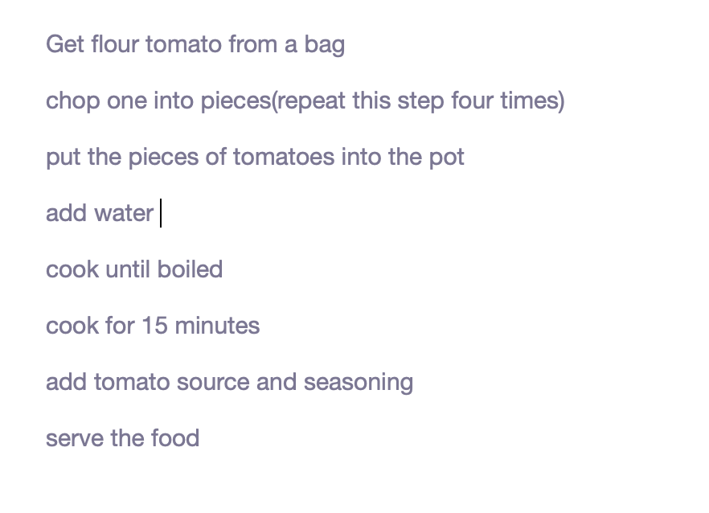
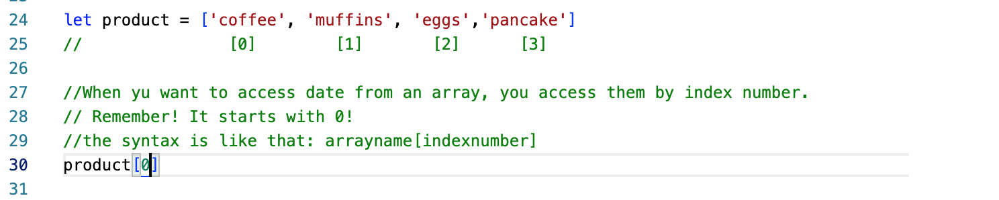
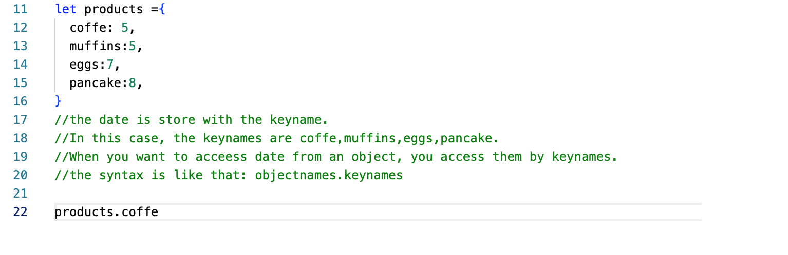

Imaging a handsome face, HTML is like the features on that face, such as eyes, nose, ears, mouths, eyebrow; CSS is how these features layout, the size of each and that’s what everybody looks different. JS is the ideas and thoughts of that person. It’s the important and inner side to direct how people act and think.
Control flow is the way computer run the code. Normally it runs from top to bottom but it can change if it hits some statement such as loops, conditionals, functions and more.
Here's a daily example: Cooking a tomato soup
The Document Object Model (DOM) is the data representation of the objects that comprise the structure and content of a document on the web. The DOM displays all the elements which made up the page in a tree-like structure. We can modify HTML elements using DOM to make it interactive.I t provide a platform form the programming language to talk with HTML documents.
document.getElementByClassName('Blue')
Once this code has selected everything in this page with that class name, you can add additional features to them. Such as change the style, change the content and so on.
An Array is a collection of data and a data structure that is stored in a sequence of memory locations. One can access the elements of an array by calling the index number such as 0, 1, 2, 3, …, etc. (Remember, program counts from 0 !) The array can store data types like Integer, Float, String, and Boolean all the primitive data types can be stored in an array.
When you access date from objects, the example are attached below
When it comes to functions, it includes declaring a function and calling a function. To reach a certain goal, you need a method. Functions are theses methods, just like building bricks. A function is a chunk of code which can be called and used for multiple times.
Declaring a function
function sayHello(name){ return 'Hello!' + name }
Calling a function
sayHello(World)
------------------------
HOME PAGE